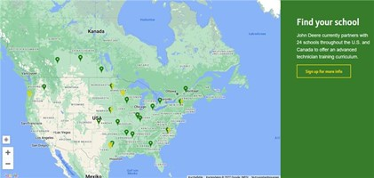

# John Deere ## Formation de technicien concessionnaire - John Deere ### Conditions d'admission - - Détenir un diplôme d'études secondaires ou l'équivalent - Obtenez un parrainage avec un concessionnaire John Deere - Répondre aux exigences d'admission au collège et aux exigences académiques ### Programme et cours - Programme de diplôme d'associé de 2 ans comprenant des cours de formation générale et des cours de formation en classe exclusifs à John Deere, notamment : - Moteurs diesel et systèmes de carburant - Composants du groupe motopropulseur - Systèmes électriques et hydrauliques - Diagnostics Service Advisor™ - Chauffage et climatisation - Procédures et politique du service après-vente - Formation spécifique aux produits John Deere - Technologie de précision De plus, vous bénéficierez d'une formation pratique chez votre concessionnaire John Deere parrain grâce à des stages réguliers afin que vous puissiez mettre votre éducation en pratique. John Deere s'associe actuellement à 24 écoles aux États-Unis et au Canada pour offrir un programme de formation de technicien avancé. Ein Bild, das Karte enthält.  [Emplois chez John Deere](https://john-deere.jobs.net/search)